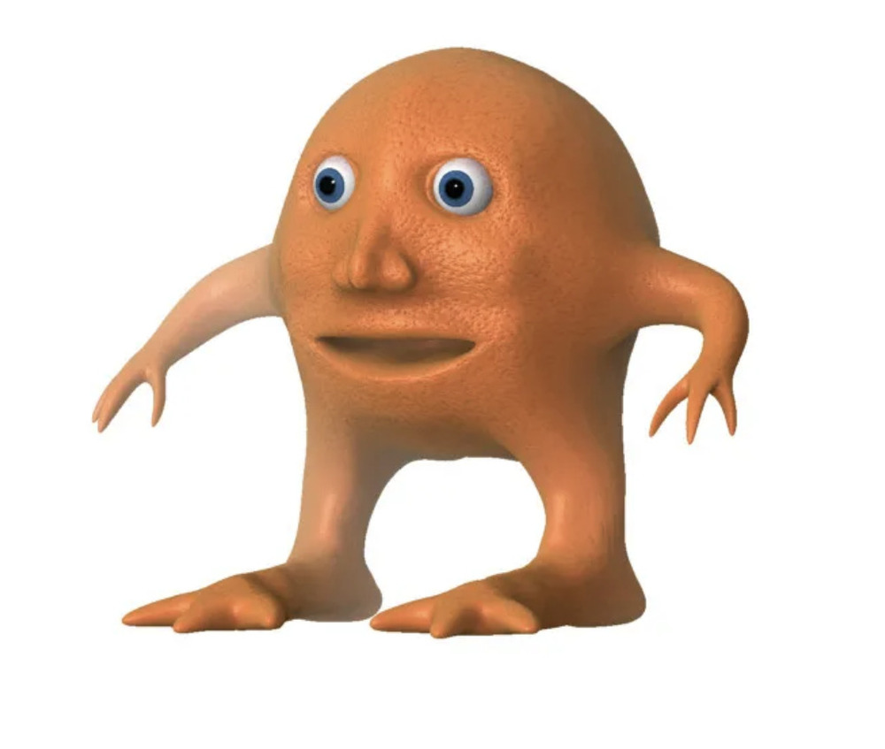

진귀한 집사카페 일일도전기
1학년 일본 여행의 추억을 잊지 못한 B양과 나는 그 당시 핫한 홍대 집사 카페에 예약하게 된다. 디저트도 맛있어 보이고, 무엇보다 신기한 체험에 흥미를 느끼는 사람들이라 기대를 안고 홍대로 향했다. 혹시나 진심인 사람들만 올까 봐 걱정됐지만 함께 줄을 선 사람들 중에는 우리처럼 학생 두 명도 있었고 직장인 커플도 있었다. 우리 차례가 오자 집사 한 분이 나오시더니 “노크 세 번을 해주십쇼”라고 하시곤 쏙 들어가셨다.
서로 노크를 미루다 결국
똑
똑
똑
.
.
“다녀오셨습니까 아가씨들” ‘안녕하십니까’도 아니라 ‘다녀오셨습니까’라니 철저한 집사들이라는 생각이 들었다. 그리고 그때부터 우리의 웃음 참기와 돈 내고 혼나기가 시작되었다.
자리에 앉기 전 겉옷을 혼자 벗고 있었는데 집사 한 분이 날 보시곤
“아가씨 겉옷을 혼자 벗으시다니요!!!!!!” 내 옷 벗는데 혼난 건 처음이다. 주섬주섬 다시 챙겨입었더니 내 겉옷을 수거해가셨다.
이렇게 당황스러운(?) 순간은 처음이라 웃음을 참을 수 없어 우렁차게 웃어버리고 말았는데 내 웃음 소리를 들으신 집사 한 분이 정색하시더니, 아가씨가 조신하지 못하게 웃으면 어떡하냐며 날 혼내셨다. 이게 연기인지 헷갈릴 정도로 정색하셔서 순간 내가 잘못한 건가 고민이 되었고 이때부터 무언가 잘못되었다는 생각이 들기 시작했다.
한 집사가 오더니 우리의 나이를 맞춰보기 시작했고 자신의 나이도 맞춰보라 하셔서 나름 고심한 끝에 25살이라고 대답했다. 나의 대답을 들은 집사 분의 표정이 구겨지더니…
이때부터는 충격에 휩싸여 쉽사리 웃을 수 없었다.
약간은 숙연해진 시디인들은 묘하게 기가 빨렸고 옆 테이블 얘기를 조용히 엿듣게 되었다. 그러던 중 한 여성분의 목소리가 우리의 귀에 걸렸다. “내가 너무 오랜만에 집에 왔네? 무도회장에서 오는 길에 휘낭시에를 좀 사 왔어” 무도회장이라니, 진심인 분의 등장에 다시 흥미진진해졌다. 그분은 집사들에게 준비한 뽑기를 통해 휘낭시에를 나누어주며 무도회장 옆에 맛있는 휘낭시에 집이 있다고 하셨다.
이때 나도 휘낭시에 하나만 맛보고 싶었던 것은
비밀..
기본 메뉴는 사진과 같이 세 단계로 나뉘어져 있었는데, 종을 흔들면 집사가 오셔서 접시를 하나씩 빼주는 방식이었다. 하지만 우리는 도저히 종을 흔들 자신이 없었고 집사들의 눈치를 보다 몰래 접시 하나를 뺐다.
돈을 낸 건 나였지만 혼을 난 것 또한 나였고 눈치를 본 것 또한 나였다.
하지만 살면서 한 번쯤은 경험해 봐도 나쁘진 않을 체험이라고 생각한다.
돈 주고 혼나긴 했지만 내가 또 어디 가서 이런 일로 혼이 나보겠는가.
나보다 이 세계관(?)에 더 잘 몰입하실 수 있는 분,
다양한 인간상을 눈 앞에서 보고 싶은 분,
인간도 동물도 아닌(?) 집사를 보고 싶은 분들에게 추천을.. 해본다.
단, 내향인들에게는 버거울 수 있는 체험이니 주의하시라..
머릿속이 물음표로 가득찼지만 기억에는 오랫동안 남을 것 같은 하루였다.